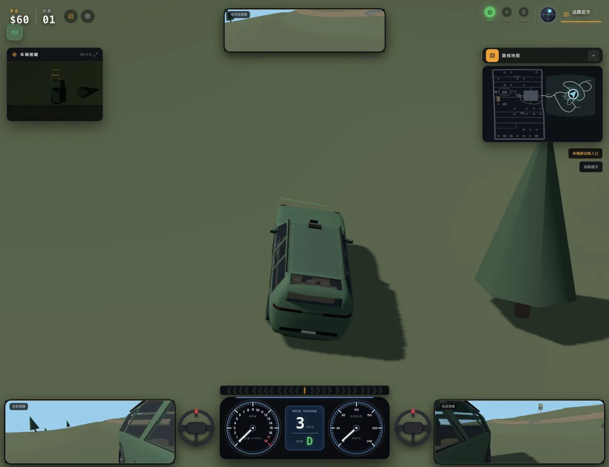
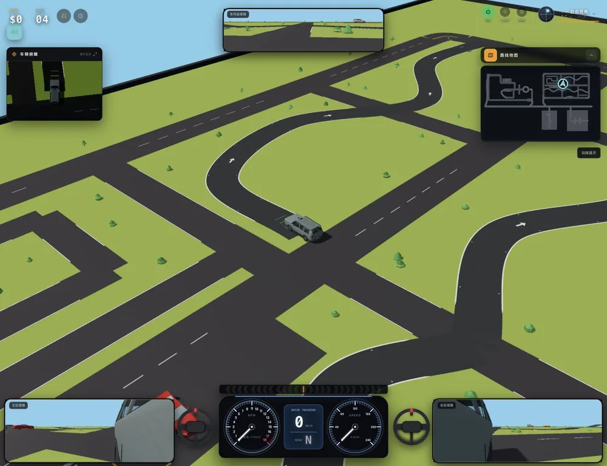
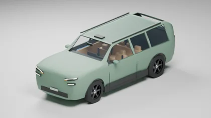
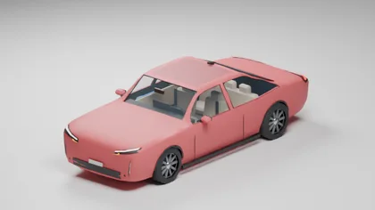
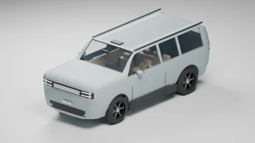
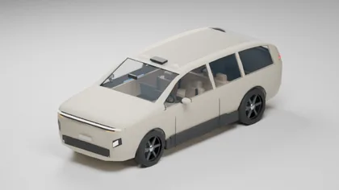
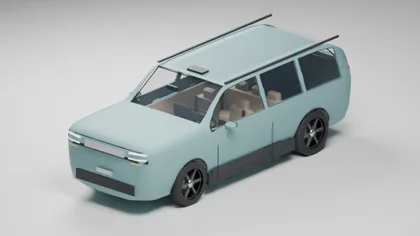
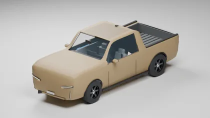

Mac
macOS 12 及以上
Apple 芯片与 Intel 分别下载

游戏实机画面 · 原创青岚山路线六款不同定位的座驾、三张场景地图。感受转向、轮胎抓地与悬架在坡道、路肩和崎岖路面上的反馈，随时暂停换车、调整设置。
盘山公路、回头弯、林场窄路与溪谷浅水。
S 弯、坡道、窄桥和不同形式的停车位。
B1 至 B3，用坡道连接的立体泊车挑战。







游戏资源随客户端安装，可离线驾驶。首次使用建议选择“自动”清晰度。
macOS 12 及以上
Apple 芯片与 Intel 分别下载
Windows 10 / 11 · 64 位
支持键盘与鼠标
横屏驾驶 · 多点触控
建议 Android 10+，支持 WebGL 2
iOS 工程已提供
安装版尚未发布
可直接下载安装包。下载完成后打开文件覆盖安装，无需卸载旧版。
安卓下载无响应时，请用系统浏览器打开此页。微信、QQ 等应用内可能限制 APK 下载。Android 备用直连下载
游戏内打开“设置 → 关于我的介绍 → 检查新版本”，再点击出现的下载按钮。检查操作不会自动安装。下载新安装包覆盖安装即可，不要先卸载；同一客户端的本机设置会保留。
自动模式会根据负载调整渲染比例。流畅、均衡、高清、超清可手动选择；画质改变不会改变车辆物理或按钮清晰度。设备发热或掉帧时可降低清晰度、关闭后视镜。
桌面建议 Apple M1 / 8GB 内存，或四核 CPU、8GB 内存及支持 WebGL 2 的显卡。手机建议 6GB 内存和近年的中高端芯片。这是起始建议，未覆盖全部机型实测。
桌面：W / S 油门与刹车，Shift 增加力度；空格按住临时手刹，P 切换驻车。F 换视角，L 切灯，R 事故重置。手机：油门与刹车上滑加力，顶部可打开设置、地图和视角。